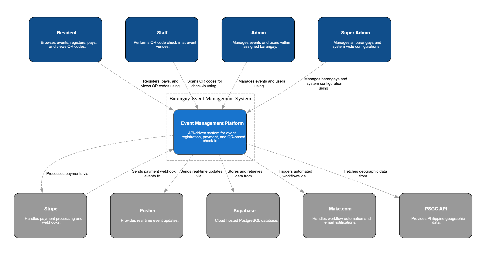
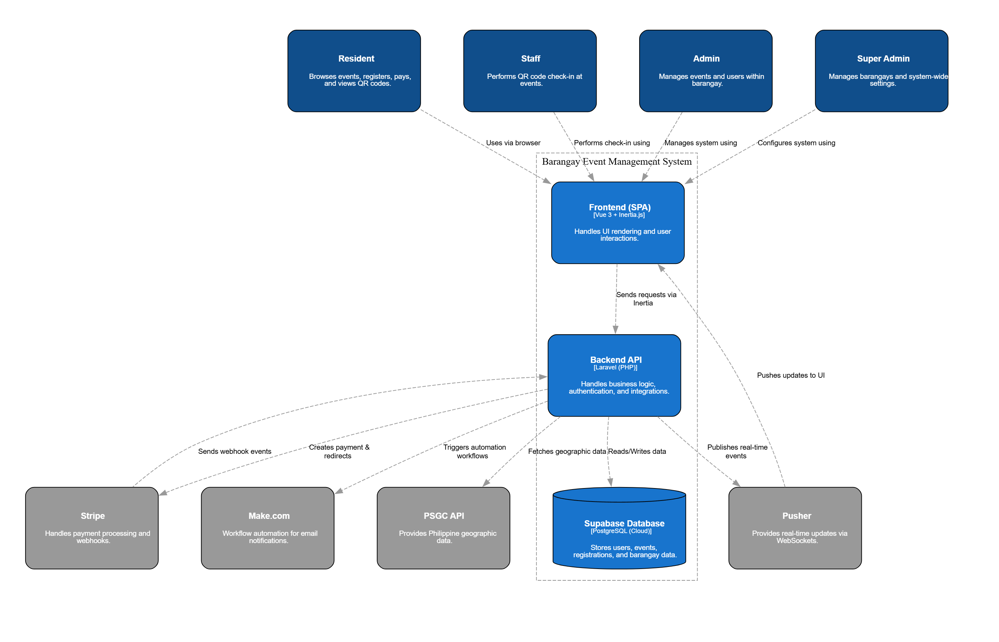
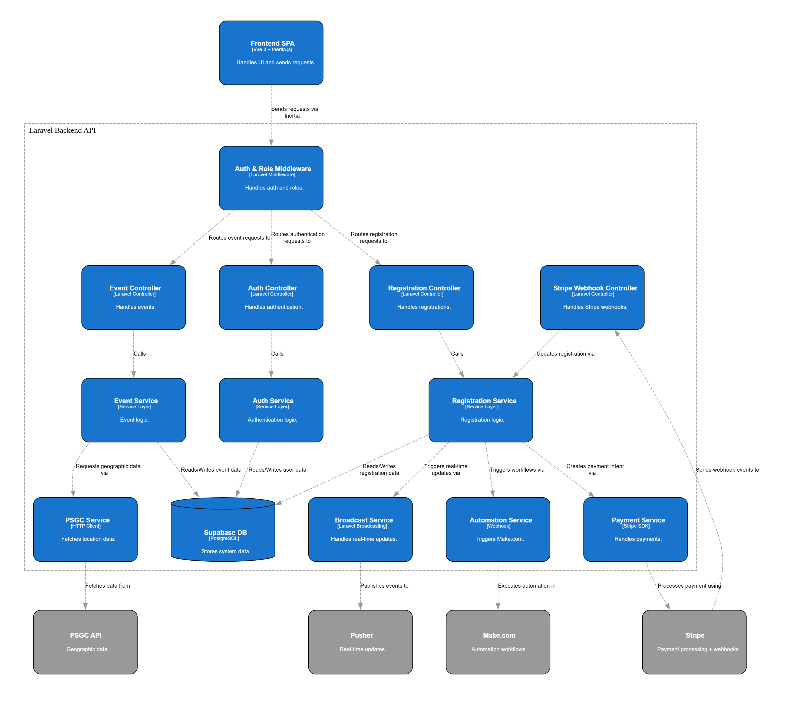

The system follows a Layered API Architecture, which separates responsibilities into three distinct layers:
Presentation, Application, and Data. This approach supports scalability, maintainability, and smoother integration
with external services.
This layer handles user interaction and visual rendering using Vue 3 with Inertia.js for a smooth SPA-like flow.
It handles user inputs (registration, login, navigation), displays real-time changes like event slot updates, and
communicates directly with backend routes.
Application Layer — Laravel API (Logic & Authentication)
This is the core processing layer built on Laravel REST API. It handles business logic for events, registration,
and payments, enforces role-based authentication through middleware, and coordinates communication between frontend
and external services.
Data Layer — Supabase PostgreSQL (Database)
This layer stores and manages all core entities such as users, events, registrations, and payments using a
cloud-hosted PostgreSQL database. It applies relational constraints and UUID-based identifiers for consistency,
integrity, and scalability.
How the Layers Work Together
User Interface (Presentation) → Backend Processing (Application) → Data Storage (Data Layer)
This layered structure keeps the system modular, scalable, and integration-ready while aligning with the architecture
design defined in project documentation.
Diagrams
1. Context Diagram
Shows the high-level ecosystem: core platform users (residents, barangay staff/admin, super admin) and the five external services (Stripe, Pusher, Supabase, Make.com, PSGC API).

2. Container Diagram
Illustrates the main runtime containers: Vue SPA frontend, Laravel backend API, and integrated cloud services for storage, payments, notifications, and geographic data.

3. Component Diagram
Breaks down backend internals into middleware, controllers, and service layer modules that coordinate event logic, registration, payments, and integrations.

4. Use Case Diagram
Maps role-based actions across residents, staff, admin, and super admin, including event management, registration, payment, notifications, and check-in functions.
5. Sequence Diagrams
Split into two flows:
Free Event Flow — request is validated, registration is stored in Supabase, slot counts update in real-time via Pusher, and Make.com sends confirmation.Paid Event Flow — user pays through Stripe Checkout, Stripe webhook confirms payment in Laravel, then Supabase, Pusher, and Make.com complete fulfillment.